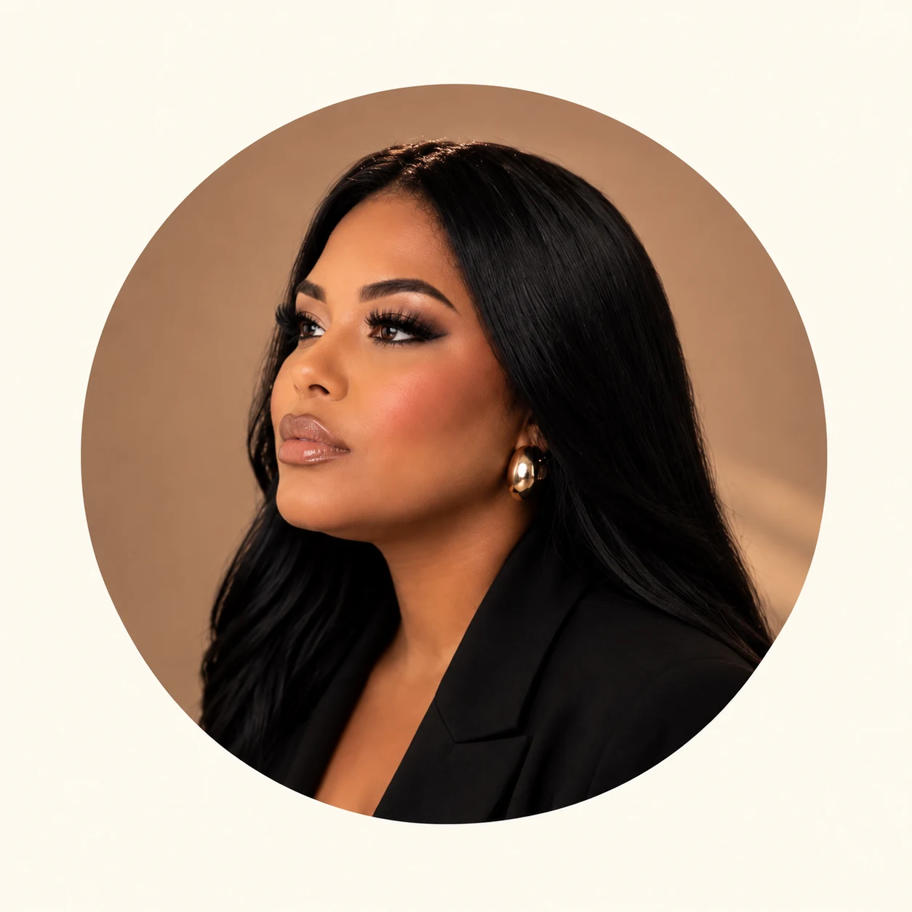

Maquiagem social
Dos tons suaves ao olhar marcante: inspiração para festas, celebrações e eventos especiais.
Consultar atendimentoRIO DAS PEDRAS · JACAREPAGUÁ
Maquiagem que valoriza quem você é e acompanha os momentos que merecem ser lembrados.

01 / A ESSÊNCIA
A beleza está na personalidade, no olhar e na forma como você se sente. A proposta do estúdio Mariana Alves é realçar essa identidade por meio da maquiagem.
Do visual delicado ao brilho marcante, cada ocasião inspira uma produção. Em Rio das Pedras, Jacarepaguá, seu próximo momento especial começa com uma conversa.
Encontre a inspiração para você02 / PARA OS SEUS MOMENTOS
Uma produção que conversa com você,
com o seu estilo e com a sua ocasião.
Dos tons suaves ao olhar marcante: inspiração para festas, celebrações e eventos especiais.
Consultar atendimentoBeleza com significado para um dia único. Converse sobre sua data, referências e desejos.
Conversar sobre meu diaO complemento para sua produção, em sintonia com a maquiagem e o estilo da ocasião.
Conhecer as possibilidades03 / BEAUTY PORTFOLIO
Uma seleção de trabalhos da Mariana.
Toque nas fotos para ver os detalhes.
04 / UMA INSPIRAÇÃO PARA VOCÊ
Escolha a ocasião e o estilo que combina com você. Vamos transformar suas referências em uma conversa.
05 / ANTES DO SEU MOMENTO
Entre em contato pelo WhatsApp, informe o serviço desejado e a data do evento. A Mariana poderá confirmar os horários disponíveis e orientar os próximos passos.
O estúdio está localizado em Rio das Pedras, na região de Jacarepaguá, Rio de Janeiro. Solicite o endereço completo e as orientações pelo WhatsApp.
Sim. Envie suas inspirações e conte um pouco sobre a ocasião e o visual desejado para conversar sobre a produção.
Fale diretamente com a Mariana para consultar valores, disponibilidade e os detalhes do atendimento para sua ocasião.
SEU MOMENTO COMEÇA AQUI
Conte sua ocasião. Envie suas referências.
O próximo passo é reservar um momento para você.